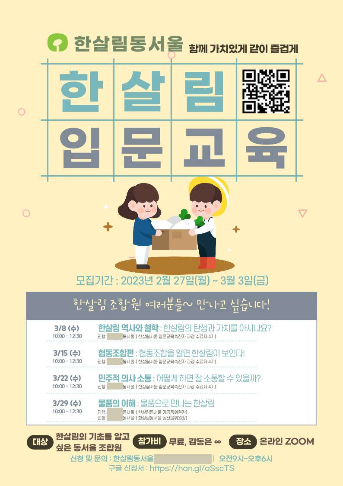
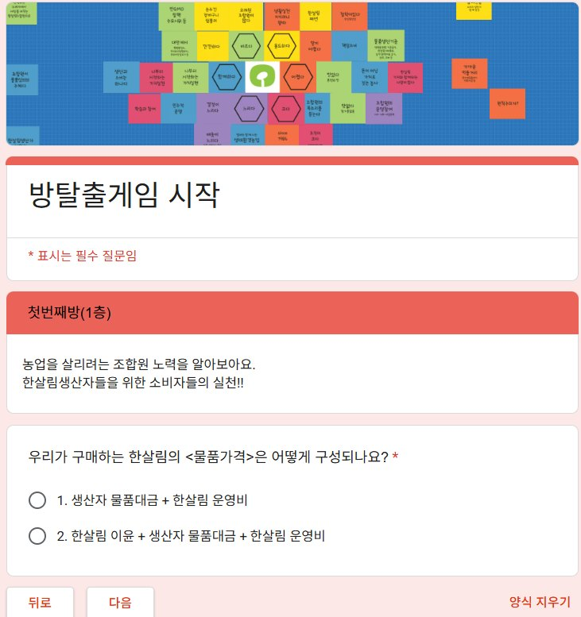
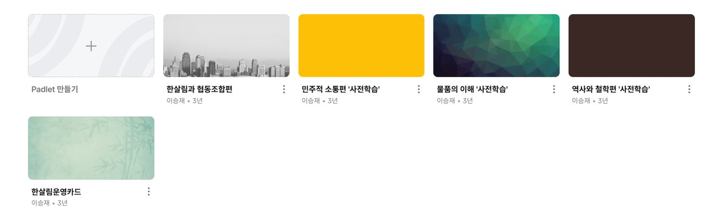
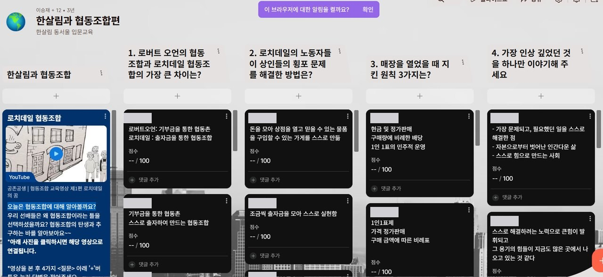
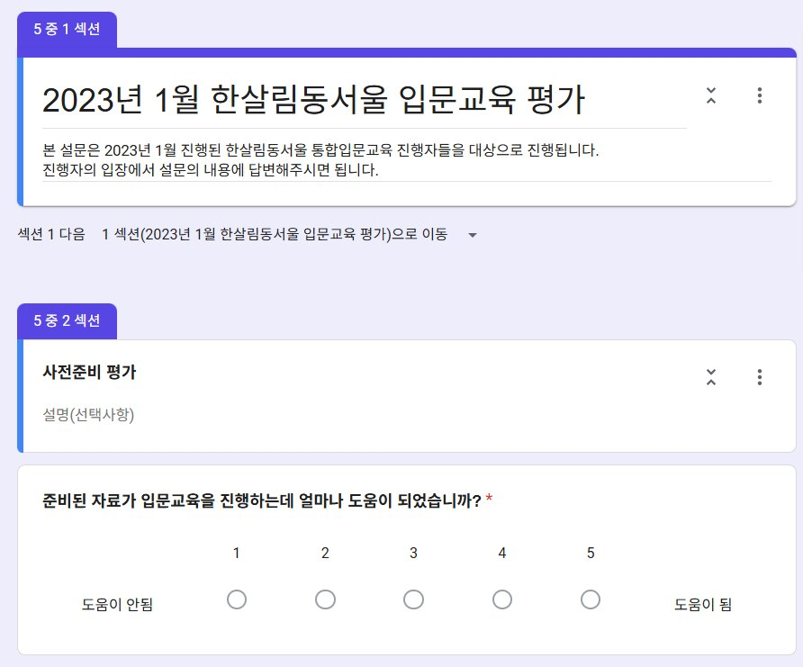

한눈에 보기
- 어디서 · 무슨 일
- 한살림동서울 기획홍보팀 · 신규 조합원 대상 입문교육
- 주어진 과제
- 한살림서울이 지역 조직으로 나뉘면서, 통합으로 운영되던 입문교육을 동서울이 직접 맡아야 했습니다.
- 내 역할
- 총괄 기획·운영. 기존 교안을 동서울에 맞게 고치고 대본·Padlet 사전과제·게임형 콘텐츠를 만들었습니다. 내부 강사진 리허설, Zoom 진행, 평가 설문까지 맡았습니다.
- 결과
- 2023년 1월·3월 두 차례, 총 40명이 참여했고 만족도는 4.28 / 5.0이었습니다.
- 이 경험으로 할 수 있는 일
- 사내 강사를 세워 교육을 직접 운영해야 할 때, 교안 수정부터 리허설, 온라인 진행, 만족도 조사까지 끝까지 챙길 수 있습니다.
기획 흐름
- 과제 파악지부가 나뉘면서 통합 입문교육을 동서울이 직접 맡게 되어, 신규 조합원 대상 온라인 교육으로 구성하기로 했습니다.
- 교안 재구성한살림서울의 기존 교안·커리큘럼을 내부 강사진과 함께 검토해 동서울 교육 목적에 맞게 고쳤습니다.
- 온라인 동선Zoom·Padlet·Notion으로 사전과제와 안내 창구를 한곳에 모았습니다.
- 콘텐츠 제작대본, Padlet 사전과제, 방탈출 게임형 콘텐츠를 만들었습니다.
- 강사진 리허설처음 교육을 맡은 내부 강사진과 과목 4개마다 3~4회씩, 총 8~12회 리허설을 했습니다.
- 운영과 평가모집·안내·당일 진행·평가 설문까지 직접 관리했습니다.
만든 자료


본인 제작모집 포스터

본인 제작방탈출 게임형 콘텐츠

본인 제작사전학습 Padlet 보드

본인 제작Padlet 토론 예시

본인 설계진행자 평가 설문참가 신청·평가 응답 원문은 제3자 개인정보가 있어 공개하지 않았습니다.